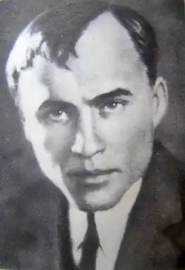

Дмитро Фальківський (1898-1934)
Дмитро Никанорович Фальківський (справжнє прізвище — Левчук) народився 3 листопада 1898 року у селі Великі Липеси (тепер Кобринського району Брестської області) в бідній селянській родині. Батько працював робітником у цегельні. Дмитро спочатку вчився в сільській школі, потім у гімназії в Брест-Литовську, яку не закінчив, бо 1915 саме там проліг один з фронтів Першої світової війни.
1920 року Д.Фальківський добровольцем вступив до Червоної Армії, три роки відслужив у органах Надзвичайної комісії Білорусії, про що не любив згадувати. Якщо вже заходилося про це, то розповідав більш ніж стримано. Проте чимало його творів так чи інакше допомагають зрозуміти цю особливість життєвого шляху поета, бо інших автобіографічних свідчень та матеріалів надзвичайно мало. Демобілізувавшись 1923 року за станом здоров'я, переїхав до Києва, де перебував на журналістській і творчій роботі. З 1924 року друкується на сторінках журналів "Червоний шлях", "Життя й революція"‚ "Всесвіт", "Глобус" та інших. Перша книжка поезій Фальківського "Чабан" вийшла 1925 року. Окремими видання: "Обрії" (1927)‚ "На пожарищі" (1928), "Полісся" (1931). Перші віршовані публікації молодого автора та його перша поема "Чекіст" (романтизація "червоного терору" в якій на всі лади оспівувалась класова ненависть, як єдина і незмінна цінність "історично закономірної" диктатури пролетаріату) загубилися в масовому віршованому потоці. Однак сам дебют Дмитра Фальківського було помічено. Схвальні відгуки на його адресу дав Б.Коваленко, якому імпонувала "ідейно чітка" позиція поета. Не дивно, що Фальківський потрапив спочатку до складу київської філії "Плугу", очолюваної С.Щупаком, а потім — до "Гарту". Однак швидко порвав з ними, заперечуючи жорстку обмеженість вульгарно тлумаченої "пролетарської літератури". Пробував шукати себе Фальківський і в епічних жанрах ("Краском", "Селькор", "Іоган", "Тов. Гнат", "Чабан"). Але ці твори не задовольняли автора. Свою поетичну стихію Дмитро Фальківський знайшов у ліриці. Його ліричні твори — це сповідь молодої людини, яка, віддавши свою першу юнацьку віру і запал більшовизмові, побачила безглуздість жертв і навіки залишилася з комплексом провини та туги за чистою первісністю природи. Класова боротьба, якою освячувалися вбивства, у віршах поета передається як безглузда боротьба батька з сином, яких обох вбиває кулемет справжнього ворога. Романтика революційних воєн у творчості письменника набирає похмурого зловісного відтінку, позначеного більше фаталізмом, аніж цілеспрямованістю в досягненні мети. Колись убиті ним жертви в уяві змальованого Фальківським чекіста постають цілком інакше: І жах один, що жертви душу — Подумать тільки — душу мають... А так — усе до болю просте. Рука пером сім раз чиркне, І вийде слово просте: "Розстріл". (Папір німий... мовчить... не крикне). Фальківський стає членом літературного угрупування "Ланка" (з 1926 р. — МАРС), де обстоювалися погляди на мистецтво, близькі до поглядів неокласиків та ваплітян. У доброзичливому оточенні "ланківців" — Б.Антоненка-Давидовича, Г.Косинки, В.Підмогильного, М.Івченка, Т.Осьмачки та інших — Д.Фальківський написав свої кращі поезії. Особливо зближується з Є.Плужником. На новому етапі творчості Фальківський прагне показати глибину національної трагедії, коли у полум'ї революції багато родин по-живому розтиналось на непримиренні табори. Він обертається в рамках небагатьох тем — віддає перевагу осінній меланхолійній тематиці, присмерковим тонам, приглушеним звукам, оспівує тугу й жаль, зів'яле листя, що падає з дерев, самоту і сум. Для радянських ідеологічних критиків такий голос був однозначно ворожим. Психологічна й ландшафтна тема віршів Фальківського, його суб'єктивно ліричні настрої інтерпретувались більшовицькою критикою як невіра в соціальне будівництво. Мовляв, тоді як увесь пролетаріат, сповнений ентузіазму, самовіддано працює над побудовою соціалістичного суспільства, поет плекає настрої зневіри. Не забарилися й належні політичні висновки: Дмитра Фальківського з літератури було усунено. Виїзна сесія Московської Військової колегії Верховного суду СРСР під головуванням Ульріха та за участю Ричкова і Ґорячова 14 грудня 1934 року засудила Дмитра Фальківського (а також Косинку, Буревія, Влизька та ін.) до розстрілу. Письменникам інкримінувавши ще й участь у терористичній діяльності. Вирок був виконаний негайно. Твори: Обрії (К., 1927); На пожарищі (К., 1928); Полісся (Харків — К., 1931).